Примитивные типы данных в Java
В Java есть следующие примитивные типы:
• целевые типы.
• вещественные типы.
• булевский тип.
За оператором объявления примитивной переменной может следовать оператор инициализации "=",
с помощью которого созданной переменной присваивается начальное значение.
Целые типы переменных.
Целые типы различаются по размеру отведенной для них памяти.
Характеристики целочисленных типов приведены на картинке ниже.
 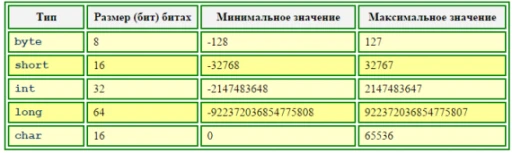
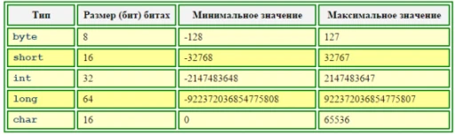
Как видно из приведённой таблицы, целые переменные, за исключением типа "char",
считаются в языке Java переменными со знаком.
Целочисленные константы могут задаваться в программе одним из трех способов: в виде десятичных,
шестнадцатеричных и восьмеричных значений. По умолчанию все числа интерпретируются как десятичные и
относятся к типу "int". Явно указать принадлежность к типу "long" можно, добавив в конце числа букву "l"
или букву "L".
Шестнадцатеричное значение задается с помощью символов "0x" или "0X", за которым значение числа
(цифры 0-9 и буквы A-F или a-f), например: "0x7FFF".
Число в восьмеричной записи должно начинаться с нуля,
за которым следует одна или несколько восьмеричных цифр, например "077777".
Восьмеричные и шестнадцатеричные числа могут быть как положительными,
так и отрицательными и изменяются в тех же диапазонах, что и числа в десятичном представлении
(например, шестнадцатеричные числа типа "byte" имеют максимальное значение "0x7F" и минимальное значение – "0x80",
а восьмеричные – соответственно "177" и – "200").
Примеры объявления целых переменных:
 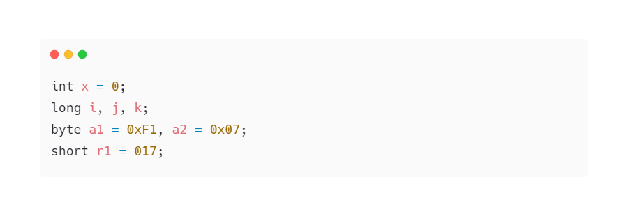
Символы в Java определяются с помощью ключевого слова char и реализованы с использованием стандарта Unicode.
Можно задать константу-символ в программе или как обычный символ. Символьное значение должны быть заключено в пару
одиночных апострофов, например:
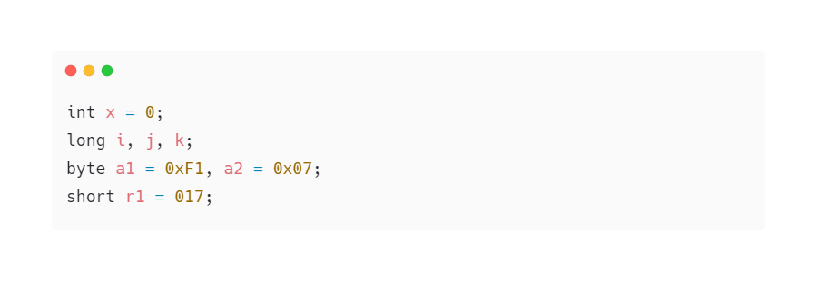
Символы в Java определяются с помощью ключевого слова char и реализованы с использованием стандарта Unicode.
Можно задать константу-символ в программе или как обычный символ. Символьное значение должны быть заключено в пару
одиночных апострофов, например:
 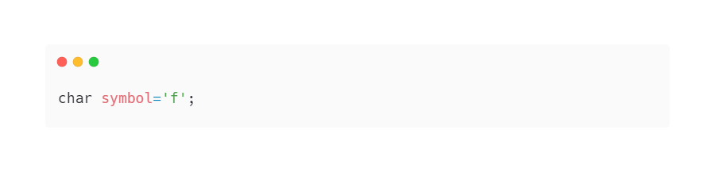
Другой способ записи символов: пара символов "\u", за которой следует четырехзначное шестнадцатеричное число
(в диапазоне от "0000" до "FFFF"), представляющее собой код символа в Unicode, например:
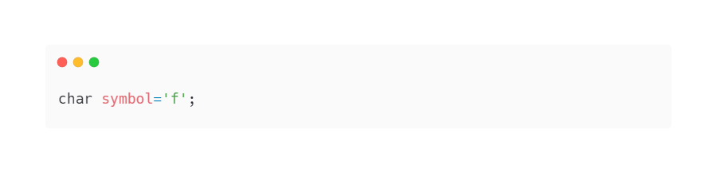
Другой способ записи символов: пара символов "\u", за которой следует четырехзначное шестнадцатеричное число
(в диапазоне от "0000" до "FFFF"), представляющее собой код символа в Unicode, например:
 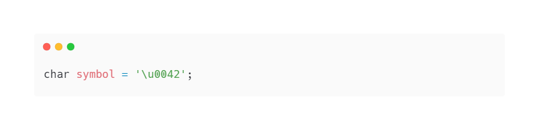
Некоторые символы, отсутствующие на клавиатуре, можно задавать с помощью так называемых escape-последовательностей,
содержащих символ "\", за которым следует буквенный символ, идентифицирующий escape-последовательность,
как показано на картинке ниже.
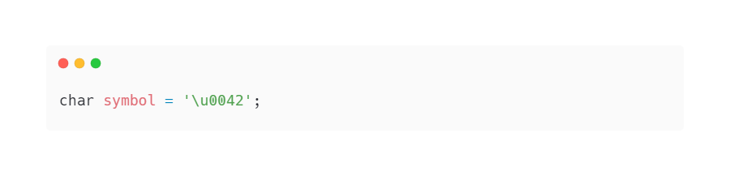
Некоторые символы, отсутствующие на клавиатуре, можно задавать с помощью так называемых escape-последовательностей,
содержащих символ "\", за которым следует буквенный символ, идентифицирующий escape-последовательность,
как показано на картинке ниже.
 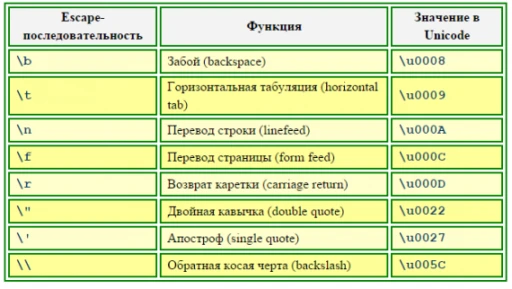
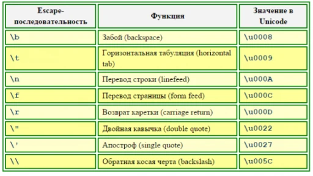
Вещественные типы переменных.
Язык Java поддерживает числа и переменные с плавающей точкой обычной и двойной разрядности – типы "float" и "double".
Для чисел с плавающей точкой нужно указывает целую и дробную часть, разделенные точкой,
например "4.6" или "7.0". Для больших чисел можно использовать экспоненциальную форму записи
(для отделения мантиссы от порядка используется символ "e" или символ "E"), например,
число -3,58×107 записывается как "–3.58E7", а число 73,675×10-15 – как "73.675e-15".
Характеристики вещественных типов Java представлены на картинке ниже.
 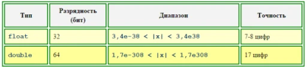
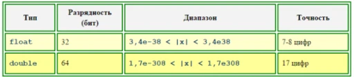
Переменные с плавающей точкой могут хранить не только численные значения,
но и любой из особо определенных флагов (состоянии): отрицательная бесконечность, отрицательный нуль,
положительная бесконечность, положительный нуль и «отсутствие числа» (not-a-number, NaN).
Все константы с плавающей точкой подразумеваются принадлежащими к типу "double".
Чтобы задать число типа "float", необходимо добавить в его конец символ "f" или символ "F".
Примеры объявления переменных с плавающей точкой:
 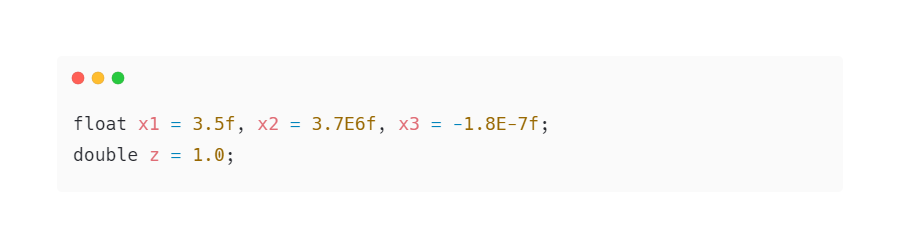
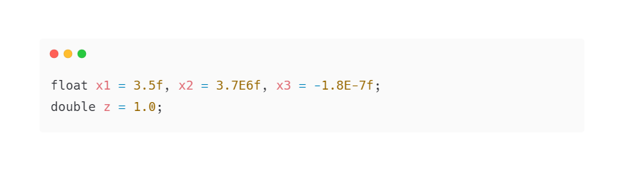
Булевский тип переменных.
Переменные булевского типа (логические переменные) могут принимать одно из двух значений:
«истина» или «ложь» и используются в языках программирования в операциях отношения (сравнения) и
логических операциях. Так, результатом сравнения:
• 5 > 3
будет "истина", а результатом второго сравнения:
• 8 < 1
будет "ложь".
В отличие от C, где результату «ложь» сопоставлено целое значение типа int, равное 0,
а результату «истина» – ненулевое значение типа int, и, соответственно, результатам сравнения присваивается
целое значение (обычно 0 или 1), в Java для булевских переменных введен свой, отдельный тип данных.
Переменные булевского типа в Java задаются с помощью ключевого слова boolean и могут иметь лишь одно из
двух значений: true или false, например:
 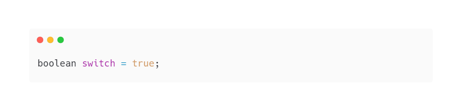
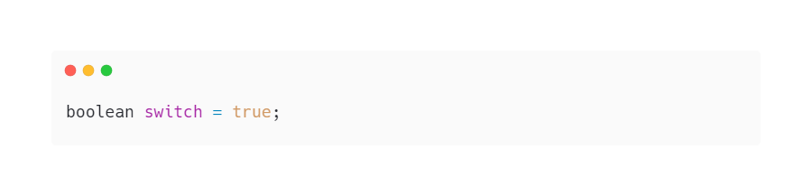